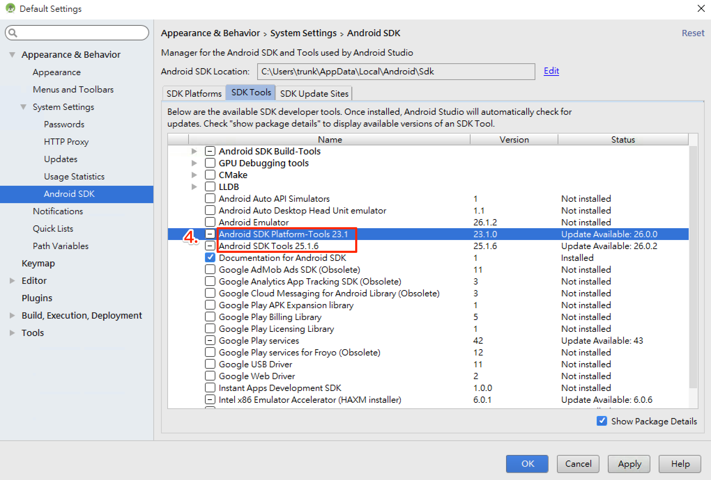
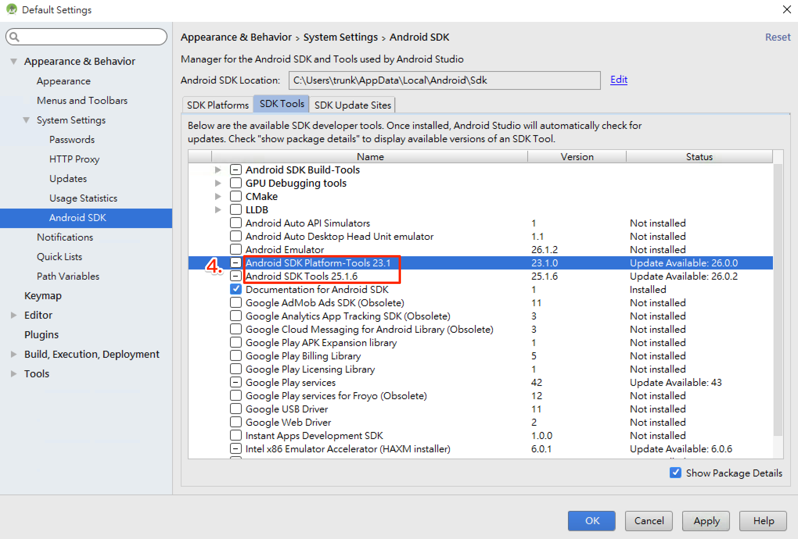
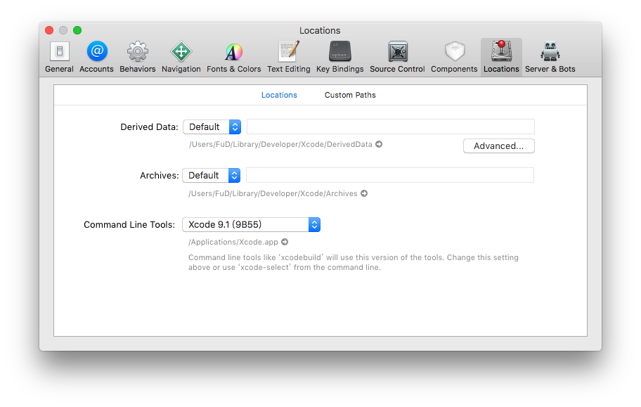

開發環境
基本系統環境
- python2
- jdk8
- Homebrew
Node
install NVM
Node Version Manager, 管理 Node 的工具，
Windows
Mac
curl -o- https://raw.githubusercontent.com/creationix/nvm/v0.33.6/install.sh | bash
設定環境變數 (~/.bash_profile, ~/.zshrc, ~/.profile, or ~/.bashrc)
export NVM_DIR="$HOME/.nvm"
[ -s "$NVM_DIR/nvm.sh" ] && . "$NVM_DIR/nvm.sh" # This loads nvm
source ~/.bashrc
install Node
nvm install 8
Android SDK
React Native 目前需要 Android Studio2.0 或更高版本。
- 下載 Windows Android Studio
- 安裝 Android Studio - 教學影片
- 安裝 SDK
 SDK Platforms 選擇 Google APIs 、 Android SDK Platform 23
SDK Platforms 選擇 Google APIs 、 Android SDK Platform 23
 SDK Tools 選擇 Android SDK Build-Tools 23.0.1
SDK Tools 選擇 Android SDK Build-Tools 23.0.1
 

Android 環境變數
確保 ANDROID_HOME 環境變數跟 SDK 路徑一致
Windows
控制台 > 系統及安全性 > 進階系統設定 > 進階 > 環境變數 > 新增

控制台 > 系統及安全性 > 進階系統設定 > 進階 > 環境變數 > 選擇 PATH > 編輯
在後方新增;C:\Users\使用者名稱\AppData\Local\Android\sdk\platform-tools;C:\Users\使用者名稱\AppData\Local\Android\sdk\tools
Mac 開起 ~/.bashrc 或 ~/.zshrc 或 ~/.profile 在最後加上
export ANDROID_HOME=${HOME}/Library/Android/sdk
export PATH=${PATH}:${ANDROID_HOME}/tools
export PATH=${PATH}:${ANDROID_HOME}/platform-tools
Android 虛擬機
- 註冊、下載 genymotion
- 新增虛擬機

Xcode
- 從 App Store 安裝 Xcode
- 安裝 Xcode Command Line Tools, Xcode > ToolBar > Locations > Preferences 
xcode-select -p，確認是否有安裝完成，安裝完成會回傳/Applications/Xcode.app/Contents/Developer- brew install watchman -
開發環境
- VS code
免環境快速練習
CRNA
npm install -g create-react-native-app
create-react-native-app AwesomeProject
cd AwesomeProject
npm start
Expo snack
VM 使用教學
環境使用教學影片 注意有先後順序之分
- 開啟 Genymotion
- 開啟 Genymotion 當中的 Android 虛擬機 Custom Phone - 7.1.0 - API 25 - 768x1280，等待開機完成
- 在
本機電腦執行命令提示字元執行指令$ adb devices $ adb tcpip 5556 - 開啟 VirtualBox 當中的 ReactNative 虛擬機
- ReactNative 虛擬機出現 login 字樣，開啟網頁 http://localhost:9083/ide.html
- 到
ReactNative 虛擬機網頁當中的 terminal視窗輸入指令$ adb connect $ip:5556 /* $ip 請自行替換為 adb devices 回傳的 Android 虛擬機 IP 例如: adb connect 192.168.57.101:5556 */ $ adb devices /* 測試是否有連上 */ $ adb shell am start -a android.settings.SETTINGS